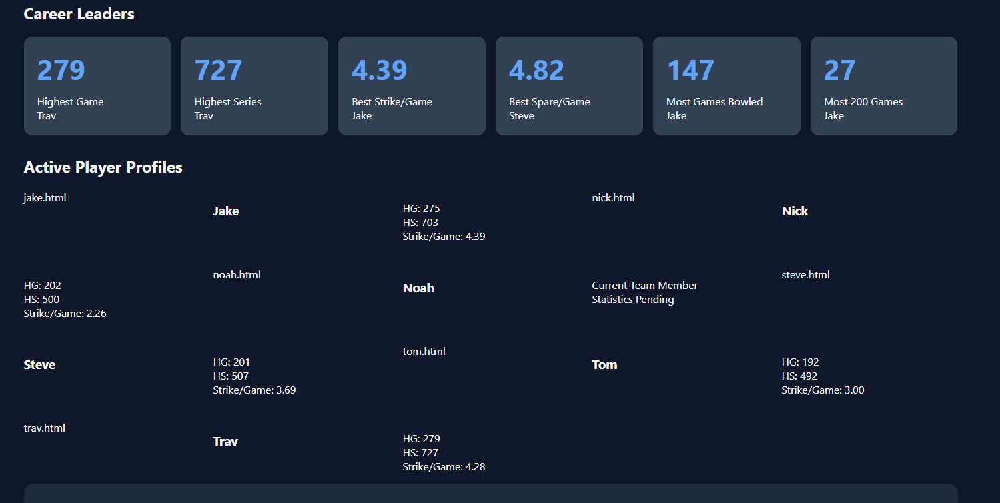

Weekly results through Week 5 and individual season reports.
SpeakerBoXXX won 5 of 7 points. Scratch games: 370, 548, 550; series: 1,468. Handicap games: 482, 660, 662; series: 1,804. Hotwater handicap: 504, 508, 561; series: 1,573. Source: Week 5 lane recap; points as confirmed by team.
Noah led the team in series and high game (212); Tom rebounded from 95 to 208. The team improved each game. Scorecard leave outcomes: Noah 8 converted / 7 open; Nick 7 / 16; Tom 4 / 13. Source: Week 5 scorecards and LaneTalk breakdown and pin leaves.
Noah led with 659 and the high game of 245; all three reached 500. Source: Week 4 scorecards and LaneTalk breakdown.
Season spreadsheet through Week 5, dated 10/29/26: Jake confirmed that StatsSheet.pdf covers the season through Week 5. The figures below are the spreadsheet's reported game counts, pin totals, averages and rates; the PDF summary does not list the dates of the underlying games. Tom and Trav's figures include their Week 1 games as substitutes for another team; those games are not SpeakerBoXXX games.
6 games; 1,026 pins; 171 average. 26 strikes (4.33/game); 16 spares (2.67/game); 3.33 open frames/game.
12 games; 1,672 pins; 139 average. 34 strikes (2.83/game); 30 spares (2.50/game); 4.92 open frames/game.
9 games; 1,439 pins; 160 average. 25 strikes (2.78/game); 35 spares (3.89/game); 3.56 open frames/game.
9 games; 1,340 pins; 149 average. 29 strikes (3.22/game); 18 spares (2.00/game); 4.78 open frames/game.
6 games; 996 pins; 166 average. 27 strikes (4.50/game); 14 spares (2.33/game); 3.33 open frames/game.
9 games; 1,899 pins; 211 average. 54 strikes (6.00/game); 27 spares (3.00/game); 1.44 open frames/game.
Jake confirmed the SpeakerBoXXX initials: S.B. is Steve, N.S. is Nick, and J.R. is Jake. Scores shown by row across the three games: S.B. (Steve) 135 / 172 / 121 = 428; N.S./N. (Nick) 136 / 186 / 111 = 433; J.R. (Jake) 182 / 135 / 186 = 503. Team scratch games: 453 / 493 / 418 = 1,364; Glory Bowl: 475 / 504 / 494 = 1,473. Jake confirms the lineup is locked for the entire night: players cannot be changed once Game 1 starts. Steve, Nick, and Jake each bowled all three Week 1 games. Nick's second initial is partly obscured in the Game 3 image, although the N. row and score are visible.
The following individual cards retain the earlier LaneTalk season snapshot through 10/22/26, not updated Week 5 averages. Recent series are verified scorecards through Week 5; absence from this list does not establish that a player did not bowl. Career totals in career.json are not season totals. The 10/29/26 spreadsheet provides game counts, pin totals, averages and rates through Week 5 above; the older figures in these individual notes are the 10/22 snapshot. Source: LaneTalk Metrics and Weekly Breakdown.
10/22 season average: 171. Verified Week 3: 209 / 156 / 158 = 523. Opened with 209 before consecutive games in the 150s.
10/22 season average: 141. Verified Week 2: 322; Week 4: 511; Week 5: 406. Week 5 rose from 97 to 159, then 150; spare conversion is an area to work on (7 converted / 16 open).
10/22 season average: 149. Verified Week 2: 508; Week 4: 503. Both recorded series exceeded 500.
10/22 season average: 142. Verified Week 2: 361; Week 5: 491. Week 5 improved sharply from 95 to 208; scorecard shows 4 converted / 13 open.
10/22 season average: 166. Verified Week 3: 501, with games of 173 / 190 / 138. The third game fell after two strong opening games.
10/22 season average: 221. Verified Week 3: 669; Week 4: 659; Week 5: 571. Week 5 closed with 212 after 178 and 181.
Pin-reading caveat: exact pin identities from lane diagrams are approximate unless clearly supported by the diagram; first-ball leave counts and convert/miss outcomes based on roll notation are reliable. Jake and Tim are left-handed: the far corner is the 7-pin for a left-hander and the 10-pin for a right-hander.
Jake confirmed that each night's lineup is locked once Game 1 starts; the same three bowlers play all three games. Scores below are scratch pins, with each bowler's three-game series.
Week 1: Steve 135 / 172 / 121 = 428; Nick 136 / 186 / 111 = 433; Jake 182 / 135 / 186 = 503. Team: 1,364.
Week 2: Steve 171 / 174 / 163 = 508; Nick 99 / 98 / 125 = 322; Tom 144 / 116 / 101 = 361. Team: 1,191.
Week 3: Jake 209 / 156 / 158 = 523; Noah 222 / 225 / 222 = 669; Trav 173 / 190 / 138 = 501. Team: 1,693.
Week 4: Noah 245 / 225 / 189 = 659; Nick 162 / 182 / 167 = 511; Steve 178 / 168 / 157 = 503. Team: 1,673.
Week 5: Noah 178 / 181 / 212 = 571; Nick 97 / 159 / 150 = 406; Tom 95 / 208 / 188 = 491. Team: 1,468.
Documented scorecards, Weeks 1–5: Jake 6 games / 1,026 pins; Nick 12 / 1,672; Steve 9 / 1,439; Noah 9 / 1,899; Tom 6 / 852; Trav 3 / 501.
Reconciliation: The through-Week-5 StatsSheet reports Tom 9 games / 1,340 pins and Trav 6 / 996, respectively 3 games / 488 pins and 3 games / 495 pins more than the scorecards listed above. Jake confirmed that Tom and Trav each subbed for another team in Week 1; those three games are included in their StatsSheet totals but excluded from the SpeakerBoXXX scorecard totals above. The differences are 488 pins for Tom and 495 pins for Trav; individual game scores for the other team are not shown. The other four players' game and pin totals agree with the spreadsheet.
Noah
669 Series
Noah
Games of 222, 225, and 222.
Only a 3-pin difference between highest
and lowest game.
Noah
Multiple strike strings and the highest
game and series of the night.
SpeakerBoXXX scorecard results are separate from the league-wide StatsSheet figures. Tom and Trav's league figures include three Week 1 substitute games for another team; individual scores for those games are unavailable. Career stats are linked separately and are not included in these season figures.
Team scorecards: Week 1: 182 / 135 / 186 = 503; Week 3: 209 / 156 / 158 = 523.
League season: 26 strikes (4.33/game); 16 spares (2.67/game); 3.33 open frames/game.
Team scorecards: Week 1: 136 / 186 / 111 = 433; Week 2: 99 / 98 / 125 = 322; Week 4: 162 / 182 / 167 = 511; Week 5: 97 / 159 / 150 = 406.
League season: 34 strikes (2.83/game); 30 spares (2.50/game); 4.92 open frames/game.
Team scorecards: Week 1: 135 / 172 / 121 = 428; Week 2: 171 / 174 / 163 = 508; Week 4: 178 / 168 / 157 = 503.
League season: 25 strikes (2.78/game); 35 spares (3.89/game); 3.56 open frames/game.
Team scorecards: Week 3: 222 / 225 / 222 = 669; Week 4: 245 / 225 / 189 = 659; Week 5: 178 / 181 / 212 = 571.
League season: 54 strikes (6.00/game); 27 spares (3.00/game); 1.44 open frames/game.
Team scorecards: Week 2: 144 / 116 / 101 = 361; Week 5: 95 / 208 / 188 = 491.
League season, including other-team sub games: 9 games / 1,340 pins; 29 strikes (3.22/game); 18 spares (2.00/game); 4.78 open frames/game.
Team scorecards: Week 3: 173 / 190 / 138 = 501.
League season, including other-team sub games: 6 games / 996 pins; 27 strikes (4.50/game); 14 spares (2.33/game); 3.33 open frames/game.
The biggest story of Week 3 was Noah's remarkable 669 series. Combined with Jake and Trav both clearing the 500 mark, the team produced its strongest week of the season so far.